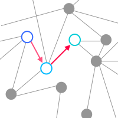

Untangling memory and influence in complex systems
Predicting sequences of movements, interactions or events means accounting for both memory (how the past shapes what happens next) and structure (who or what can interact). Higher-order Markov modelscapture memory, but their state space grows exponentially and they quickly become hard to interpret. This project develops the Separable Markov model, a compact and interpretable alternative for settings with long-range memory and limited data.